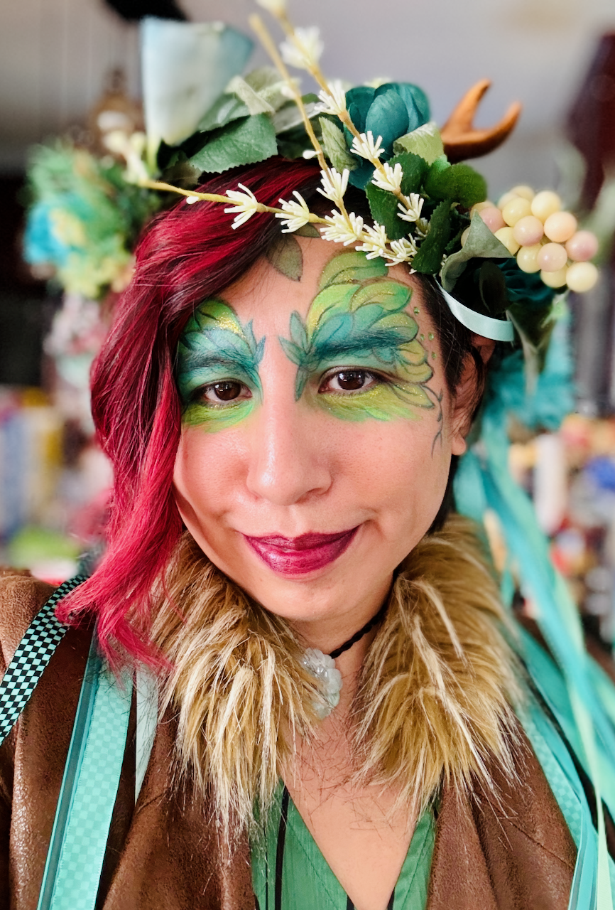
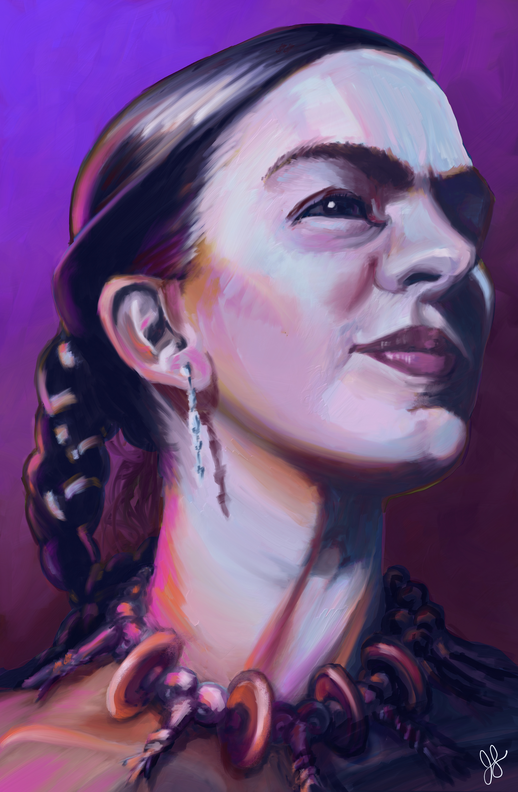

Jessica
Loredo
I embrace complexity and thrive on making the internal external.
Trauma-informed care, counseling practice, and the path toward private practice. The room where healing lives.
→15+ years of UX and product thinking. Systems made visible, experiences made human.
→
Apps, paintings, illustrations, writing, games. The full range of making — in whatever medium the work demands.
→A creative community platform for makers. Built from the inside out — Next.js, Redis, PostgreSQL, real-time collaboration.
A self-reflection tool mapping psychological traits into visual constellations. No diagnosis — just seeing yourself more clearly.

Digital paintings, oils, watercolor, gouache, collage. The luminous dark made visible.
Children's books, SEL content, game design. Making complex inner worlds accessible to young minds.
"I am many things and I am also just, Jesi."
I'm a product designer, clinical counseling intern, illustrator, painter, app developer, and emerging author living in Kansas City. I thrive at the intersection of things that are supposed to stay separate — the clinical and the creative, the technical and the expressive, the interior and the visible.
I'm working toward a private practice as a trauma-informed clinician, building tools that externalize interior experience, and making art in whatever medium the moment requires.